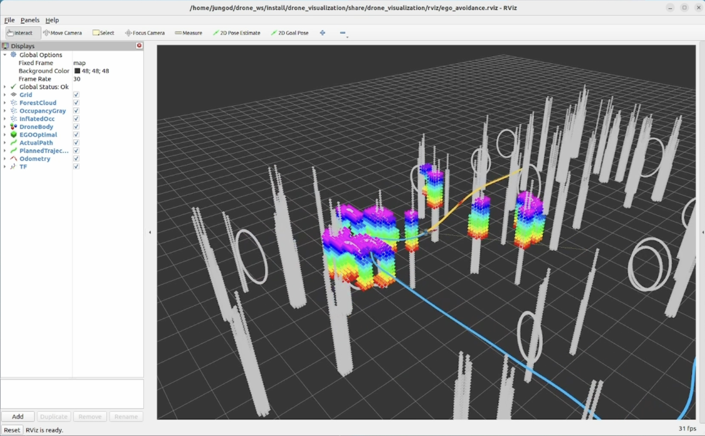
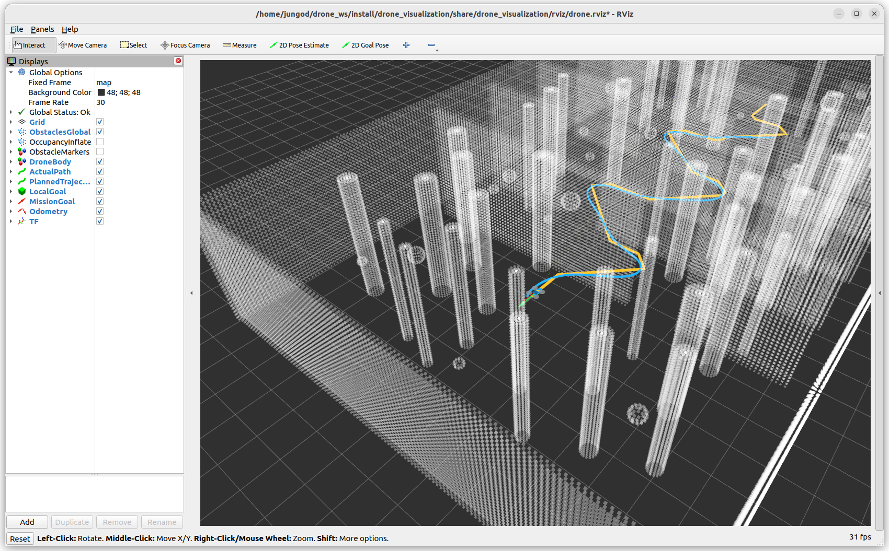
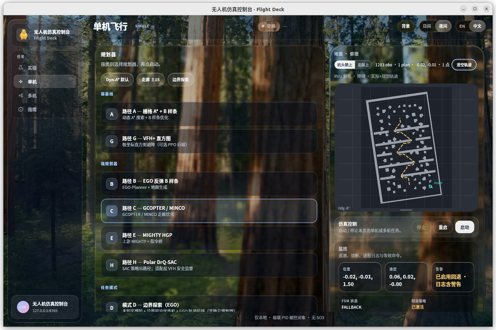

Anona · 模块化四旋翼自主
一套平台。
八大规划。
One plant. Many planners. Fair comparison.
统一被控对象，可插拔规划器，在同一套标准下公平对比 —— 一个基于 ROS 2 Humble 的四旋翼自主飞行仿真工作台。
Architecture · 架构
平台不变，规划可变。
自研动力学与级联 PID 构成唯一的被控对象。Path A–H 通过同一套接口接入 —— 换规划器，不换平台，对比才公平。
One plant. Many planners. Fair comparison.
被控对象
PLANT里程计、IMU、电机转速，一个四旋翼的完整动力学模型。
drone_dynamics + drone_controller世界
WORLD种子化点云地图，同一片森林、迷宫与走廊，人人可复现。
drone_map + map_adapter规划
PLANNINGPath A–H 八个后端，从经典算法到强化学习，同台竞技。
drone_planner + vendors + rl运维
OPS一键 launch、任务控制台、六项验收场景，开箱即用。
drone_bringup + Mission Console图 1 · 系统架构：数据从任务目标流向电机指令，状态经 /drone/odom 反馈回规划器。
One Contract · 话题契约
同一个契约，公平对比。
所有规划器读写同一组 topic，从目标到轨迹、再到电机指令，接口完全一致。公平，从接口开始。
坐标系 map (ENU) → base_link。目标由 RViz 2D Goal Pose 下达；黄色为规划轨迹，蓝色为实飞轨迹。
Path A–H · 规划器
八条路径，一个平台。
经典、优化、学习三类方法同场竞技。强弱基线进入正式对比矩阵，其余归入模式与谱系对照。
Dyn-A*
homemade · weakDyn-A* + B 样条，占据栅格自动适配地图尺寸与膨胀半径。
经典 · 弱基线EGO-Planner
ego · strong基于梯度的 B 样条重绑定，本地感知裁剪同一张全局地图。
优化 · 强基线GCOPTER
gcopter · strongMINCO 走廊优化，直接发布契约轨迹，无需额外被控对象。
优化 · 强基线FUEL-style
fuel_explore · mode前沿探索任务模式：雾感知 + 前沿 FSM，EGO 负责轨迹执行。
模式 · 非独立规划器MIGHTY
mighty · strongHGP 引导 + Hermite-LBFGS，经桥接节点接入统一被控对象。
优化 · 强基线Fast-Planner
fast_planner · optionalkino_replan 谱系基准，独立对照，不进入正式强弱矩阵。
对照 · 谱系基准VFH+
vfh · weak极坐标直方图反应式避障，可选 PPO 后端作为兼容别名。
经典 · 弱基线DrQ-SAC
sac · strong极坐标占据图像输入，学习策略滚动 Bézier 路径，VFH 兜底。
学习 · 强基线强弱分类定义见 PLANNERS.md：canonical_comparison_ids = { homemade, ego, gcopter, mighty, vfh, sac }
Procedural Maps · 地图
世界，由种子生成。
没有 PCD 场景文件 —— 全部为过程化点云。同一颗种子，复现同一片森林、迷宫与走廊。
森林
official_forest · 26×20×3圆柱与偏航环随机分布，起点置于云外，东西走廊贯穿。
迷宫
official_maze2d · 20×20递归分割墙，路宽 1.2m，比上游更宽，适配膨胀半径。
立柱
official_posts · 20×20×412 根空心矩形柱，稀疏分布，留出可穿越的间隙。
窄廊
narrow_corridor · S-bendS 形弯道，三扇 1.2–1.8m 交错门，侧翼散布干扰物。
另有 Perlin 体素、3D 迷宫、密林与致密非对称变体；每张地图随 /map/metadata 发布难度与种子。
Demo · 演示
眼见为实。
单机在随机森林中回环飞行，多机编队同屏协同 —— 全部来自仓库的真实录制。


Acceptance · 验收
六个一键场景，一次通过。从悬停到窄道穿越，同一套脚本，自动验收。
python3 scripts/run_acceptance.py
正式报告 · report/acceptance_report.md


Mission Console · 快速开始
从终端，到驾驶舱。
浏览器控制台或原生 app，地图与规划器即点即换，单机与多机编队一屏掌控。
- ✓浏览器控制台 · http://127.0.0.1:8765/
- ✓地图与规划器切换，Start / Stop 即点即用
- ✓单机任务与多机编队（EGO-Swarm 内核）
- ✓Ubuntu 22.04 + ROS 2 Humble，MIT 开源

Ubuntu 22.04 · ROS 2 Humble · colcon 构建。原生 app 安装：bash packaging/linux/install.sh
$ cd ~/drone_ws
$ export PYTHONNOUSERSITE=1
$ colcon build --symlink-install
$ source install/setup.bash
$ ros2 launch drone_bringup planner_sim.launch.py \
planner:=ego map:=official_forest
$ ros2 run drone_bringup dashboard # 任务控制台
→ http://127.0.0.1:8765/
为飞行而生。
Anona · Modular Quadrotor Autonomy Workbench
本页面依据仓库公开文档生成 · 演示视频见 Bilibili